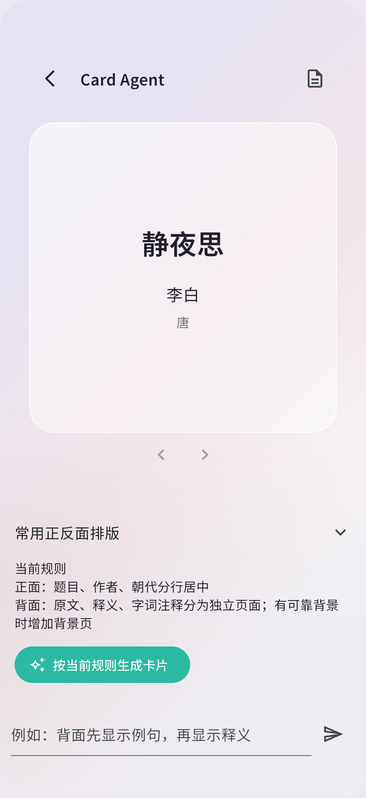
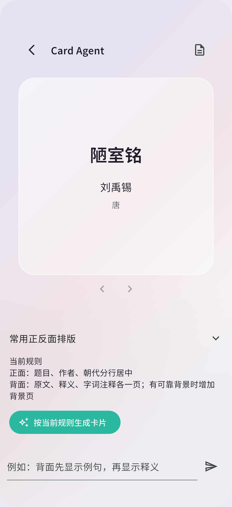

文学卡分页实测
真实模型生成，iOS 18.5 模拟器截图。原始结果保留；内容问题见测试报告。
L01-1-back-page-1L01-1-back-page-2L01-1-back-page-3L01-1-front
L01-chatL02-1-back-page-1-bottomL02-1-back-page-1L02-1-back-page-2-bottomL02-1-back-page-2L02-1-back-page-3-bottomL02-1-back-page-3L02-1-front
L02-chat